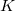
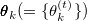
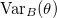
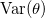
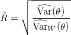
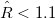

| 基礎からのベイズ統計学 |
| 基礎からのベイズ統計学 |
本のマルコフ連鎖が得られているとき、連鎖間分散と連鎖内分散 を推定する。
を推定する。
仮に強い定常性が成り立っている場合、これらの重み付き和によりの不偏推定量を構成することができる。
このとき、
|  | (B.18) |
により収束判定を行う。 一般に、ないしで収束したと判断する。
系列内相関のある標本が無相関な標本から得られる平均と同じ精度を達成するにはその何倍の標本が必要であるかを示す1。系列内相関がある場合の標本平均の分散と無相関である場合の標本平均の分散との比を算出する。
また、この逆数を相対数値的効率性という（Geweke, 1992）。
系列内相関のある標本のサンプルサイズが、無相関の標本ではいくつのサンプルサイズに相当するか評価する2。
Footnotes
| 基礎からのベイズ統計学 |